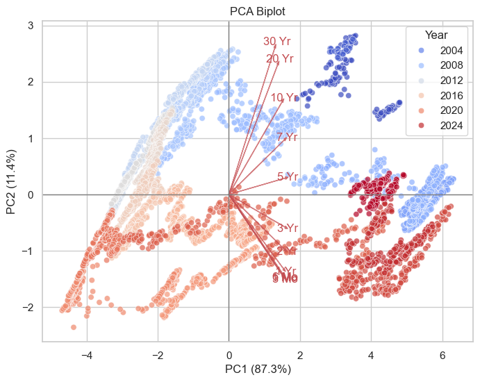

Use the first URL to inspect the table structure, and get the table headings, then loop through all the URLs to get the table data.
Code
from bs4 import BeautifulSoup as BSimport requests as reqimport datetimeimport pandas as pdimport numpy as npurls=[]url ="https://home.treasury.gov/resource-center/data-chart-center/interest-rates/TextView?type=daily_treasury_yield_curve&field_tdr_date_value=xxxx"start_year =1990end_year = datetime.date.today().yearyears = [str(yr) for yr inrange(start_year, end_year+1)]for year in years: urls.append(url.replace('xxxx', year))# inspect the first URL to get the table headingshtml_text = req.get(urls[0]).textsoup=BS(html_text, 'html.parser')print('Scrapping from website:', soup.title.text)print(f'This script is to scrap US Treasury Rate data from {start_year} to {end_year}.')# column headingsheadings = []# table = soup.find('table', class_ = 'usa-table views-table views-view-table cols-26') # table_rows = table.find_all('tr')for item in soup.find_all('th'): headings.append(item.text)# print('Table headings <th>:', headings)# now scrap all the table data/ td from all the URLsall_rows = []for url in urls: html_text = req.get(url).text soup = BS(html_text, 'html.parser') table_rows = soup.find_all('tr') for tr in table_rows[1:]: td = tr.find_all('td') row=[i.text.strip('\n') for i in td] #i is each td element, i.text is to find all text in that i, .strip to remove entries starts with \n all_rows.append(row)df=pd.DataFrame(data=all_rows, columns=headings)# df.to_csv('raw_US_Treasury_Rates.csv', index=False)
Scrapping from website: Resource Center | U.S. Department of the Treasury
This script is to scrap US Treasury Rate data from 1990 to 2025.
Reviewing and Cleaning the Data
Inspecting dataframe via df.describe(), df.info() and df.head(). There are a few things to clean up:
Remove leading and trailing spaces
Replace all ‘N/A’ with NaN
Drop columns with all NaN values
convert the ‘Date’ column to datetime format
convert the rest of the columns to float
All done! Ready for analysis.
Code
# display(df.describe(), df.head())# noticed there are space in N/A cell, # print("N/A cell: '", df['20 YR'][0], "'")# remove all blank spaces in the dataframe, except headersclean_df = df.iloc[:,:].map(lambda x:x.strip())# converting to lower case, if cell equals to 'n/a', then replace with empty stringclean_df = clean_df.map(lambda x:np.nan if (x.lower() =='n/a'or x =='') else x)# dropping all columns with all NaN valuesclean_df.dropna(axis=1, how='all', inplace=True)# change Date column to datetime and the rest to floatclean_df[clean_df.columns[0]] = pd.to_datetime(clean_df[clean_df.columns[0]])for col in clean_df.columns[1:]: clean_df[col] = clean_df[col].astype(str).astype(float)# clean_df.info()# clean_df.head()
Initial observations
I choose you, Seaborn and Matplotlib!
Data Distribution
Utilizing seaborn and matplotlib, we will visualize the trends and distribution in the U.S. Treasury Par Yield Curve Rates over time.
Code
import seaborn as snsimport matplotlib.pyplot as plt# Melt df to long formatdata = clean_df.melt(id_vars='Date', var_name='Series', value_name='Value')data.dropna(inplace=True)f, ax = plt.subplots(figsize=(7, 6))# Plot the orbital period with horizontal boxes, vlag - blue/pink diverging color palettesns.boxplot( data, x="Value", y="Series", hue="Series", palette="vlag")ax.set_xlabel("US Treasury Rates (%)")ax.xaxis.grid(True)ax.set(ylabel="")
Box plots allows us to view the distribution of rates for each maturity period. We can also observe that the short term rates has generally a lower rate than the long term rates, which is expected.
1.5Mo and 4Mo maturity rate have significantly smaller range of data. Upon review, it appears that the 1.5Mo and 4Mo maturity rates were only added to the dataset in recent years, which has less data points compared to other rates.
The line chart below shows the trends of different maturity rates from 1990 to 2024 are generally trending down. Unexpected upward spikes starting around 2021, likely due to economic recovery post-pandemic.
Moreover, the short-term rates (1 month, 3 month, 6 month, 1 year) are more volatile, while the long-term rates (10 year, 20 year, 30 year) are more stable. There are a few period that the short-term rates spike above the long-term rates, indicating an inverted yield curve, which we will explore this further.
Inverted Yield Curve
“When short-term rates are higher than long-term rates.”
Economists use the yield curve, which compares the interest rates difference bweteen “10-year and 3-month” or “10-year and 2-year” treasury rate, to determine if short-term investments are more profitable than long-term ones. When the yield curve inverts and the difference drops below zero, it serves as a warning sign of an impending recession.
The assumption of recession is supported by the last 30 years of invasion occurrences. Recession happened in early 2000 (dot-com bubble), 2007-2009 (housing bubble), and 2020 (pendemic). The 3 recessions mentioned experienced a decrease below 0, as shown in the chart above.
Principal Component Analysis (PCA)
Sklearn, Here we go!
Standardize df and Covariance Matrix Heatmap
PCA allows us to reduce the dimensionality of our dataset while retaining most of the variance. This is particularly useful when dealing with datasets that have many correlated variables, as it helps to identify the underlying structure and patterns in the data.
Viewing the covariance matrix, we can see that the short-term rates (1Mo, 3Mo, 6Mo, 1Yr) are highly correlated with each other, as are the long-term rates (10Yr, 20Yr, 30Yr). However, there is a lower correlation between short-term and long-term rates, which is expected given their different sensitivities to economic conditions.
Code
eval, evec = LA.eig(cov)for i inrange(3):print('The PC{} is {}, its variance is {}, % variance is {}%, % cumulative variance is {}% '.format( i+1 , np.round(evec[:, i],2) , round(eval[i],2) , round(eval[i]/eval.sum()*100,2) , round(eval[:i+1].sum()/eval.sum()*100,2)))data = clean_df[['Date', '1 Mo', '3 Mo', '6 Mo', '1 Yr','2 Yr', '3 Yr', '5 Yr', '7 Yr', '10 Yr', '20 Yr', '30 Yr']].copy()data.dropna(inplace=True)data = data.set_index('Date')# bar graphPCs = [f'PC{i+1}'for i inrange(11)]fig = plt.figure()ax = fig.add_axes([0,0,1,1])EigenValues =evalax.bar(PCs,EigenValues)plt.show()
The PC1 is [0.3 0.3 0.31 0.31 0.31 0.32 0.32 0.31 0.3 0.27 0.26], its variance is 9.61, % variance is 87.34%, % cumulative variance is 87.34%
The PC2 is [-0.29 -0.29 -0.28 -0.26 -0.2 -0.12 0.06 0.19 0.33 0.46 0.52], its variance is 1.25, % variance is 11.37%, % cumulative variance is 98.71%
The PC3 is [ 0.44 0.33 0.19 0. -0.25 -0.38 -0.41 -0.31 -0.07 0.19 0.38], its variance is 0.12, % variance is 1.06%, % cumulative variance is 99.77%
You can see that PC1 and PC2 explain most of the variance in the data (98.7% combined). The majority of the information in the original dataset can be captured in just two dimensions, which is a significant reduction from the original 11 dimensions.
PC1 has coefficients that are all positive and relatively similar in magnitude (~0.3). It represents a general trend across all maturity rates. In contrast, First 6 of the PC2 coefficients are negative, and the last 5 are positive. This suggests PC2 captures the contrast between short-term and long-term rates.
PCA Biplot
To further analyze PC1 and PC2, we will review are 2 main components in the biplot: arrows and points. The arrows represent the original variables (maturities), while the points represent the observations (dates).
Code
PCs = np.dot(data1, evec[:, :2]) # matrix multiplication: 11 variables (maturities) * weights (PC1, PC2)data1 = clean_df[['Date', '1 Mo', '3 Mo', '6 Mo', '1 Yr','2 Yr', '3 Yr', '5 Yr', '7 Yr', '10 Yr', '20 Yr', '30 Yr']].copy()data1.dropna(inplace=True)data1 = data1[['Date']]data1['Year'] = data1['Date'].dt.yeardata1.reset_index(drop=True, inplace=True)pc_df = pd.DataFrame(PCs, columns=['PC1', 'PC2'])pc_df = pd.concat([data1, pc_df], axis =1)plt.figure(figsize=(8,6))sns.scatterplot(data = pc_df, x='PC1', y='PC2', alpha=0.7, hue ='Year', palette='coolwarm')# Add arrows for variable loadingsfor i, var inenumerate(data.columns):#arrow start from 0,0, expand at the direction of PC1 and 2 for each maturity, *5 to make the arrows visible plt.arrow(0, 0, evec[i,0]*5, evec[i,1]*5, color='r', alpha=0.7, head_width=0.05) plt.text(evec[i,0]*5.2, evec[i,1]*5.2, var, color='r', ha='center', va='center')# 87.3% data explained by PC1 and 11.4% explained by PC2plt.xlabel("PC1 (%.1f%%)"% (eval[0]/eval.sum()*100))plt.ylabel("PC2 (%.1f%%)"% (eval[1]/eval.sum()*100))# horizontal and vertical lines at 0, y and xplt.axhline(0, color='grey', linewidth=1)plt.axvline(0, color='grey', linewidth=1)plt.title("PCA Biplot")plt.grid(True)plt.show()

Points and Clusters
Each point is weighted value of PC1 and PC2 for each observation (date). The position of the points indicates how the observations relate to the PC. The points are colored by year with a gradient from blue (earlier years) to red (later years). Each year has a distinct cluster, and the clusters allow us to observe how the observations change over time in relation to the PC.
Arrows (Loadings)
The arrows (loadings) represents the original variables (maturities). The arrows are pinned at the origin (0,0). The direction represents how each variable contributes to the PC, while the length indicates the strength of the contribution.
Length of Arrows
The length of the arrows provides insight into the importance of each variable in explaining the variance captured by the PC. 30Yr has the longest arrow, indicating that the strongest influence on the PC1. In contrast, 5Yr has a shorter arrow, suggesting that lesser contribution to the variance.
Angles of Arrows
The arrows for 1Mo, 3Mo, 6Mo, and 1Yr are close together, indicating that these short-term rates are highly correlated, same as arrows of 10Yr, 20Yr, and 30Yr for long-term rates. The arrows for 1Mo and 30Yr point in nearly opposite directions, suggesting a negative correlation between short-term and long-term rates. The arrows for 10Yr and 3Yr are nearly perpendicular, which indicates that the variables are uncorrelated.
Direction of Arrows
20Yr and 30Yr have high positive loadings on PC1 as they are closer to top axis/ loadings of PC1. 1Mo and 3Mo have lower loadings on PC1 smaller impact on the overall level of interest rates. None of the maturities have high loadings on PC2, indicating that PC2 captures the contrast between short-term and long-term rates rather than being dominated by any single maturity.
So, What’s the takeaway?
The U.S. Treasury Par Yield Curve Rates have shown a general downward trend over the past few decades, with notable volatility in short-term rates. The occurrence of inverted yield curves has historically been a precursor to recessions, highlighting the importance of monitoring these rates for economic forecasting. As of October 2025, we are seeing yield curve returning to normal after the recent inversion in 2024, indicating potential economic recovery.
With covariance matrix heatmap and PCA analysis, we can see the strong correlations among short-term rates and among long-term rates, as well as the distinct patterns in how these rates have evolved over time. The PCA biplot provides a clear visualization of that relationships, emphasizing the contrast between short-term and long-term rates and their respective contributions to the overall variance in the dataset. The main source of variation in the yield curve comes from changes in long-term interest rates. In other words, the overall movement in the data is largely driven by the behavior of 20Yr and 30Yr bonds. In other words, the long bonds set the tone: when they move, the whole curve follows.